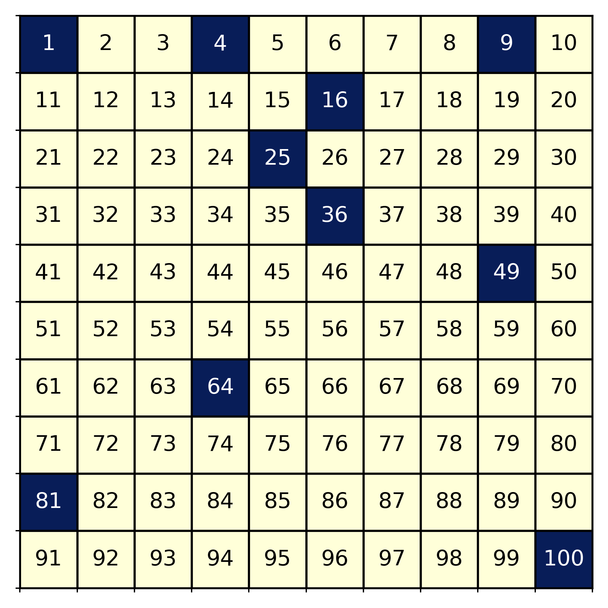

I love Fivethirtyeight’s Riddler column. Usually, I can solve the problem with computation, but on some rare occasions I can do some interesting math to get the solution without having to code. Here is the first puzzle I ever solved. It is a simple puzzle, yet it has an elegant computational and analytic solution. Let’s take a look.
The puzzle says:
You place 100 coins heads up in a row and number them by position, with the coin all the way on the left No. 1 and the one on the rightmost edge No. 100. Next, for every number N, from 1 to 100, you flip over every coin whose position is a multiple of N. For example, first you’ll flip over all the coins, because every number is a multiple of 1. Then you’ll flip over all the even-numbered coins, because they’re multiples of 2. Then you flip coins No. 3, 6, 9, 12 , And so on.
What do the coins look like when you’re done? Specifically, which coins are heads down?
Computing the Solution
This is really easy to program. Here is a little python script to compute the solution:
import numpy as np
import matplotlib.pyplot as plt
from itertools import product
# Array of 100 True. True is Heads up
Ncoins = 100
coins = np.ones(Ncoins,dtype = bool)
index = np.arange(1,Ncoins+1)
#Go through the coins
for N in range(1,Ncoins+1):
coins[index%N==0] = ~coins[index%N==0] #Flip the coin. Shown below is the solution. In dark blue are the coins face down (I’ve arranged them in a 10 by 10 grid and annotated them with their position for clarity). When we take a look at the coins variable, we see that those coins in positions which are perfect squares pop out. That is an interesting result, but what is more interesting is reasoning out the solution without doing any computation at all!
Reasoning Out the Solution.
First, let’s think why a coin would end up face down. If all coins start heads up, then it would take an odd number of flips for the coin to end up face down. Since coins are only flipped when we pass a factor of a coin’s position, then those coins in positions with an odd number of factors will be heads down at the end.
So 9 would end up heads down because it has factors 1 (flip face down), 3 (flip face up), and 9 (flip face down), while 6 would be heads up because it has factors 1, 2, 3, and 6.
So which numbers have an odd number of factors? Here is where we get to do some interesting math. The Fundamental Theorem of Arithmetic says that every integer \(N>1\) is either prime or can be uniquely factored as a product of primes
\[N = \prod_{j} p_j^{a_j} \>.\]
If \(N\) can be factored like this, that means it has
\[\prod_{j} (a_j +1)\]
unique factors.
It is straight forward to argue that a composite odd number must be the product of odd numbers, so we know that the \(a_j+1\) must be odd \(\forall j\), and so that means the \(a_j\) are even and can be written as \(a_j = 2n_j\). Thus, our factorization becomes
\[N = \prod_j p_j^{2n_j} = \prod_j (p_j^{n_j})^2 = \left(\prod_j p_j^{n_j} \right)^2 \>,\]
which means that if \(N\) has an odd number of factors, it must be a perfect square! All done.
I love trying to solve the Riddler’s puzzle without coding. It makes me draw upon knowledge I haven’t used in a while, and may force me to learn something new.